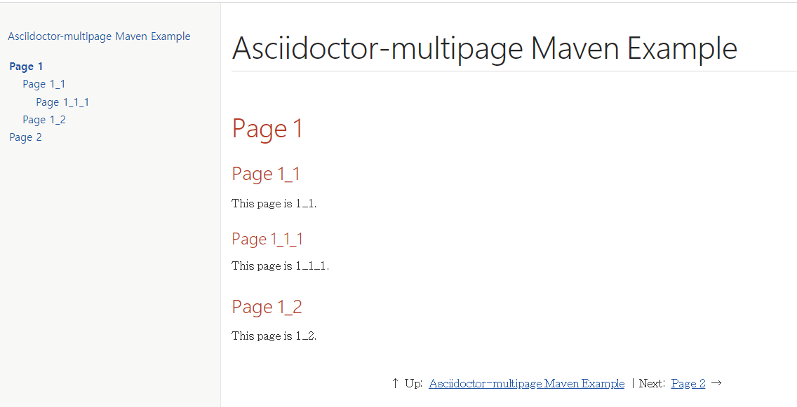

asciidoctor multiple pages from a single page
2022, Apr 02
asciidoc asciidoctor
check asciidoctor extension
먼저 extension이 있는지 체크했다.
https://asciidoctor.org/docs/extensions/
exist asciidoctor-multipage plugin
exampe page: https://owenh.net/static/portfolio/nxlog/guide/nxlog-user-guide.html
but ruby base.
asciidoctor multipage maver example
So, I made a maven version project.
https://github.com/tnfhrnsss/asciidoctor-multipage-maven-example

maven clean install
하면,
기존에는 index.html 페이지 한개로 렌더링되던 부분이
각각의 페이지로 구성
reference
https://discuss.asciidoctor.org/Using-the-multi-page-converter-from-maven-td8549.html
https://rubygems.org/gems/asciidoctor-multipage
https://github.com/asciidoctor/asciidoctor-maven-examples에서 revealjs가 maven-gem구성